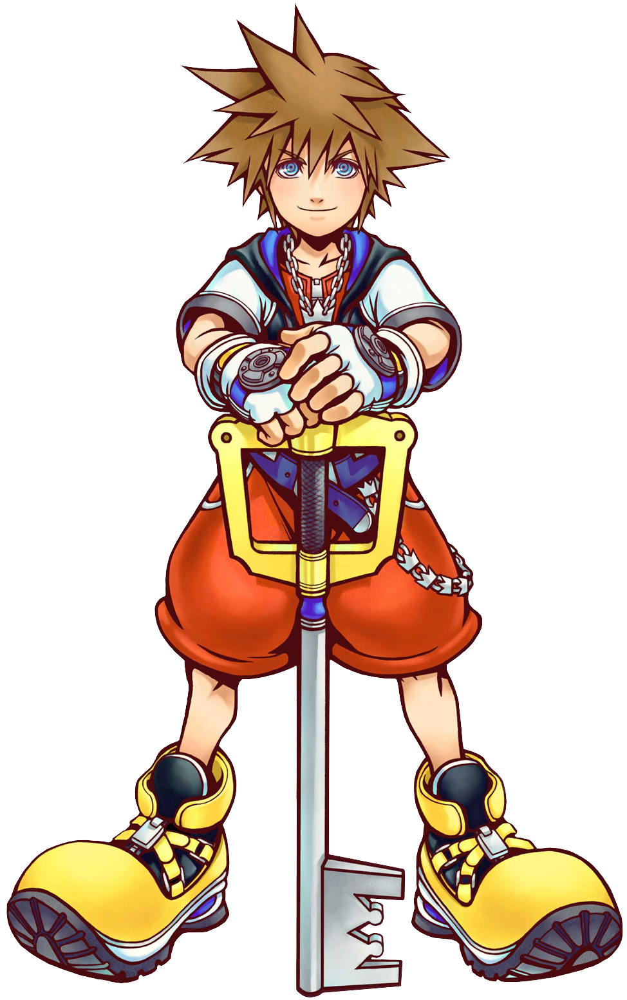
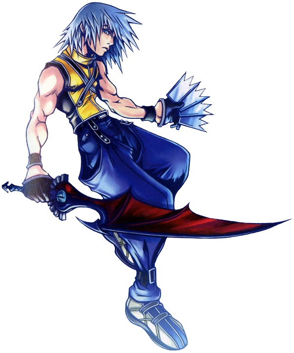
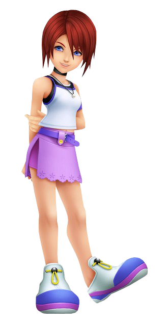
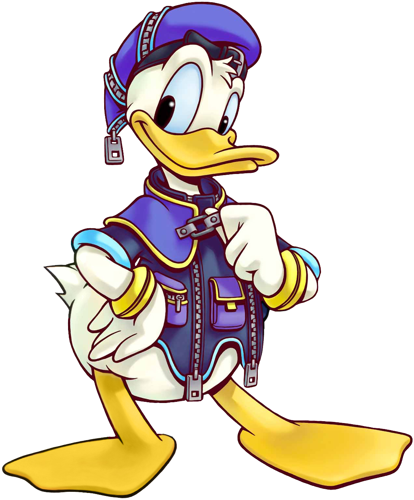
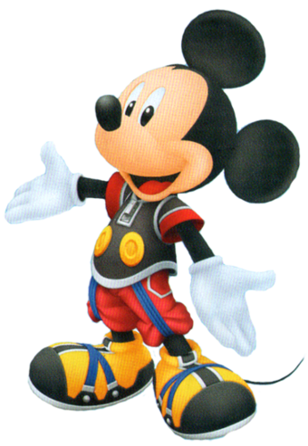

Sora
Sora once lived on the tropical Destiny Islands with his best friends, Riku and Kairi. The trio dreamed of one day leaving their island home and setting out to explore other worlds.
They would soon get their wish when the Destiny Islands were invaded by the Heartless, dark creatures who prey on the hearts of others. During the night of the Heartless invasion, Sora received a magical weapon called a Keyblade, the only thing that can fight the Heartless. In spite of Sora's efforts, his home was swallowed up by darkness, sending him to a world between worlds called Traverse Town.
This is where he met Donald Duck and Goofy, the court magician and captain of the guard of Disney Castle, who were sent on a mission from their missing king to find "the key" and stop the Heartless.
Believing Sora to be the key their king spoke of, Donald and Goofy joined up with Sora, to both find the king and Sora's missing friends. Along with these new friends, Sora would set out on a journey that would take him through various worlds, fighting Heartless and other villains in an attempt to stop darkness from taking over every world.
Riku
Riku has spent most of his life living on the Destiny Islands, a secluded island that he and the others living on it could never leave.
Along with his friends Sora and Kairi, Riku dreamed of one day leaving the island and exploring other worlds. This desire to explore eventually grew so great, that Riku ended up letting the Heartless, dark creatures who steal the hearts of others, loose in the Destiny Islands in an attempt to escape his island home.
Separated from his friends in the chaos, Riku was discovered by the evil witch Maleficent, who stoked his inner darkness and turned him into a pawn for her evil schemes. Believing that Sora had forgotten and replaced him with new companions, Riku's darkness would end up taking him over, and his body was possessed by a sentient Heartless called Ansem.
Riku eventually managed to regain control of his body, and decided to atone for his mistakes and control the darkness inside of him.
Kairi
Kairi was originally born in Radiant Garden and currently lives on Destiny Islands along with her two best friends, Sora and Riku.
Kairi is also a Princess of Heart, one of seven maidens whose hearts hold no darkness but only pure light, and is needed to open the Final Keyhole to Kingdom Hearts.
Goofy

He and Disney Castle's Court Magician Donald went out to search for the King, and ends up teaming with Sora for the rest of their journey.
Despite his position at Disney Castle, Goofy dislikes using weapons (instead using a simple shield in combat) and attempts to avoid fighting whenever possible, preferring to find peaceful solutions to problems. Though simple-minded and clumsy as always, and constantly the butt of comic relief, Goofy is the constant voice of optimism and, surprisingly, selectively perceptive, often noticing things others miss and keeping his cool when Sora and Donald lose it.
He comes off as the sage of the group, despite how he is portrayed in the Disney cartoons.
Donald
Donald is the Royal Magician of Disney Castle and the royal assistant for King Mickey. As such, his weapon of choice is a Staff. He often provides comic relief more than advancing the plot despite the amount of camera time he has in the series. He is rash and has an aggressive personality, but he is loyal to his friends.
Though he initially only cares about Sora as a means to track down King Mickey, Donald soon grows to deeply care for him as a friend.
King Mickey
Mickey Mouse, often referred to as King Mickey, The King, His Highness, Your Highness, or more commonly as Your Majesty, is the king of Disney Castle and Queen Minnie's husband.
He travels the worlds battling the forces of darkness and is a Keyblade Master, and the chosen Keyblade wielder for the Realm of Darkness, though he follows the path of light.
Originally believing that the darkness had to be eliminated, he eventually realized that light and darkness are interdependent and cannot exist without the other due to his encounters with Riku.
Due to his quests—and thus, being away from his queen—he has no known children that will become the heirs to his kingdom.